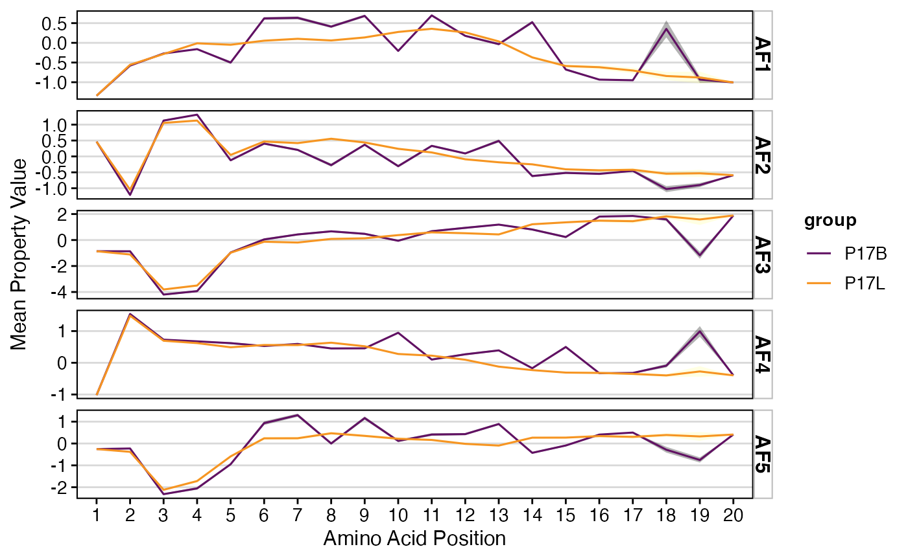
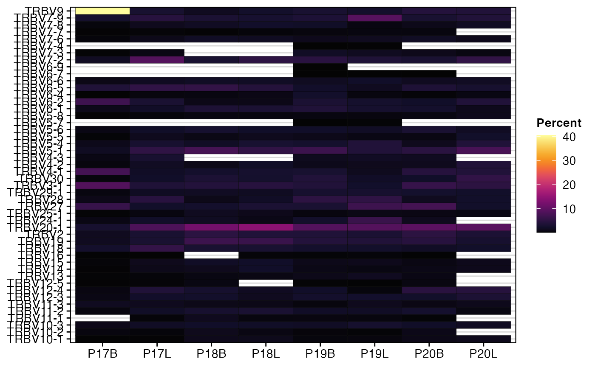

Summarizing Repertoires
Compiled: May 20, 2024
Source:vignettes/articles/Repertoire_Summary.Rmd
Repertoire_Summary.RmdpercentAA
Quantify the proportion of amino acids along the cdr3 sequence with
percentAA(). By default, the function will pad the
sequences with NAs up to the maximum of aa.length.
Sequences longer than aa.length will be removed before
visualization (default aa.length = 20).
percentAA(combined.TCR,
chain = "TRB",
aa.length = 20)
positionalEntropy
We can also quantify the level of entropy/diversity across amino acid
residues along the cdr3 sequence. positionalEntropy()
combines the quantification by residue of percentAA() with
the diversity calls in clonalDiversity().
method
- “shannon” - Shannon Diversity
- “inv.simpson” - Inverse Simpson Diversity
- “norm.entropy” - Normalized Entropy
positionalEntropy(combined.TCR,
chain = "TRB",
aa.length = 20)
positionalProperty
Like positionalEntropy(), we can also examine a series
of amino acid properties along the cdr3 sequences using
positionalProperty(). Important differences from the above
function for positionalProperty() is dropping NA values as
they would void the mean calculation. positionalProperty()
also display a ribbon with the 95% confidence interval surrounding the
mean value for the selected properties.
method
- “Atchley” - Atchley Factors
- “Kidera” - Kidera Factors
- “stScales” - stScales Vectors
- “tScales” - tScales Vectors
- “VHSE” - Vectors of Hydrophobic, Steric, and Electronic properties
positionalProperty(combined.TCR[c(1,2)],
chain = "TRB",
aa.length = 20,
method = "Atchley") +
scale_color_manual(values = hcl.colors(5, "inferno")[c(2,4)])
vizGenes
A visualization of the relative usage of genes of the TCR or BCR,
using vizGenes(). There is some functional crossover
between vizGenes() and two functions below called
percentGenes() and percentVJ(). But
vizGenes() is more adaptable to allow for comparisons
across chains, scaling, etc.
x.axis
- Gene segment to separate the x-axis, such as “TRAV”, “TRBD”, “IGKJ”
y.axis
- Gene segment or categorical variable to visualize along the y-axis
plot
- “barplot” for a bar chart
- “heatmap” for a heatmap
scale
- TRUE to scale the graph by number of genes per sample
- FALSE to report raw numbers
order
- “gene” to order by gene name
- “variance” to order by variance between the separate variable categories
vizGenes(combined.TCR,
x.axis = "TRBV",
y.axis = NULL,
plot = "barplot",
scale = TRUE)
vizGenes() can also be used to look at the usage of
genes in a single chain. For example, say we are interested in the
difference in TRB V and J usage between lung and peripheral blood
samples - we can easily take a look at this using the following
code:
#Peripheral Blood
vizGenes(combined.TCR[c(1,3,5,7)],
x.axis = "TRBV",
y.axis = "TRBJ",
plot = "heatmap",
scale = TRUE)
#Lung
vizGenes(combined.TCR[c(2,4,6,8)],
x.axis = "TRBV",
y.axis = "TRBJ",
plot = "heatmap",
scale = TRUE)
For the P17 patient samples, what if we are interested in chain pairings, we can look at TRBV and TRAV at the same time using them as inputs to x.axis and y.axis.
percentGenes
Quantify the proportion of V or J gene usage with
percentGenes(). Like percentAA(), we select
the chain of interest and then indicate the gene of interest with the
gene parameter. Two major limitations of
percentGenes() are, 1) the function quantifies only V or J
genes, and 2) the quantification of the genes are limited to all the V
or J genes seen across the samples, not all possible V or J genes.
percentGenes(combined.TCR,
chain = "TRB",
gene = "Vgene")
We can also use the output percentGenes() for
dimensional reduction to summarise the gene usage by sample. This can be
done with a simple principal component analysis (below) or even more
complex reductions.
df.genes <- percentGenes(combined.TCR,
chain = "TRB",
gene = "Vgene",
exportTable = TRUE)
#Performing PCA
pc <- prcomp(df.genes)
#Getting data frame to plot from
df <- as.data.frame(cbind(pc$x[,1:2], rownames(df.genes)))
df$PC1 <- as.numeric(df$PC1)
df$PC2 <- as.numeric(df$PC2)
#Plotting
ggplot(df, aes(x = PC1, y = PC2)) +
geom_point(aes(fill =df[,3]), shape = 21, size = 5) +
guides(fill=guide_legend(title="Samples")) +
scale_fill_manual(values = hcl.colors(nrow(df), "inferno")) +
theme_classic() percentVJ
Quantify the proportion of V and J gene usage with
percentVJ(). Like percentGenes(), this
function will quantify the percentage of V and J paired together across
individual repertoires. The output can be visualized using a heatmap or
as input for further dimensional reduction.
percentVJ(combined.TCR,
chain = "TRB")
df.genes <- percentVJ(combined.TCR,
chain = "TRB",
exportTable = TRUE)
#Performing PCA
pc <- prcomp(df.genes)
#Getting data frame to plot from
df <- as.data.frame(cbind(pc$x[,1:2], rownames(df.genes)))
df$PC1 <- as.numeric(df$PC1)
df$PC2 <- as.numeric(df$PC2)
#Plotting
ggplot(df, aes(x = PC1, y = PC2)) +
geom_point(aes(fill =df[,3]), shape = 21, size = 5) +
guides(fill=guide_legend(title="Samples")) +
scale_fill_manual(values = hcl.colors(nrow(df), "inferno")) +
theme_classic() 
percentKmer
Another quantification of the composition of the CDR3 sequence is to define motifs by sliding across the amino acid or nucleotide sequences at set intervals resulting in substrings or kmers.
motif.length
- Numerical value for the length of the kmer.
top.motifs
- Display the most variable genes determined by mean absolute deviation (MAD).
percentKmer(combined.TCR,
cloneCall = "aa",
chain = "TRB",
motif.length = 3,
top.motifs = 25)
percentKmer(combined.TCR,
cloneCall = "nt",
chain = "TRB",
motif.length = 3,
top.motifs = 25)